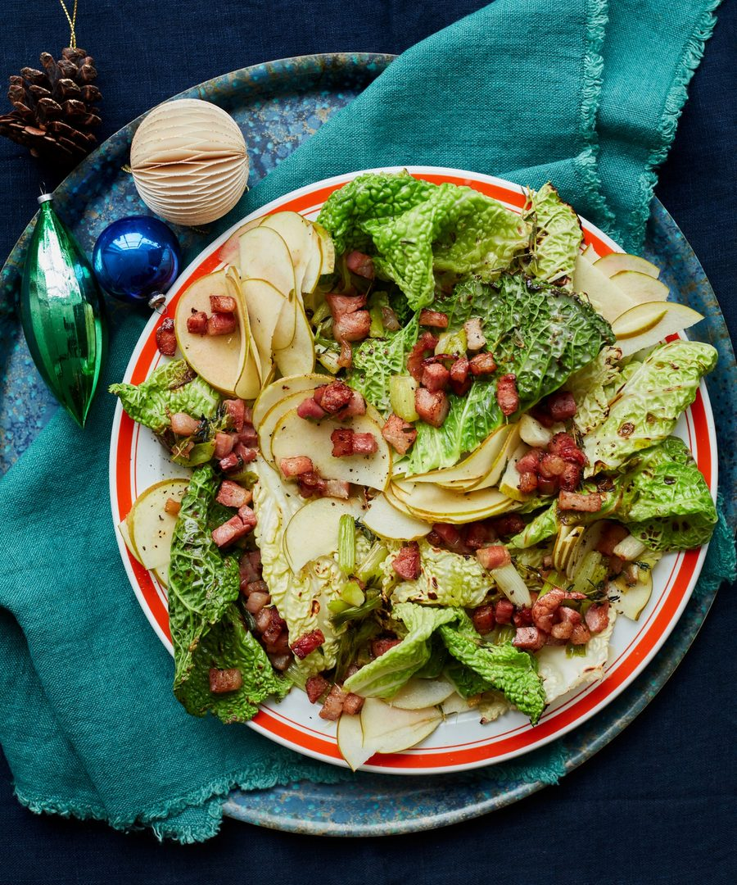

Savoy cabbage with crisp pancetta and cider-and-mint dressing

The crunchy apple, fresh dressing and quick-cooked cabbage make this a very welcome addition to the Christmas table, not least because it cuts right through all the usual richness. Make it while the roast bird is resting, or cook it an hour or two ahead and scatter on the apple and pancetta mix just before serving. For vegetarians, ditch the pancetta and crisp up some crumbled chestnuts instead.
Put the pancetta, thyme sprigs, a teaspoon of oil and a heavy grind of pepper in a large saute pan on a medium heat, and cook, stirring often, for 10 minutes, until the pancetta is lightly coloured. Stir in the spring onion whites, dried mint and an eighth of a teaspoon of salt, and cook, stirring frequently, for five minutes more, until the spring onions are golden and the pancetta crisp. Using a slotted spoon, transfer the pancetta mix to a medium bowl, leaving the fat behind in the pan.
Mix the sliced spring onion greens in a bowl with the fresh mint, vinegar and apple, then set aside.
Return the pan to a medium-high heat and, once it’s hot, add a third of the cabbage, a teaspoon and a half of oil and a quarter-teaspoon of salt, and cook, stirring occasionally, for five minutes, until the cabbage is a little wilted, charred and just cooked through. Transfer to a platter with a lip, repeat twice more with the remaining cabbage, then tip it all back into the pan, and cook, stirring, for two minutes more.
Tip the cabbage mix on to the lipped platter, return the pan to a medium heat, then add the cider and thyme leaves, and leave to bubble away for five minutes, until reduced, thickened and almost syrupy. Take off the heat, stir in the mustard, then pour all over the cabbage. Scatter the apple and pancetta mixture on top and serve warm.